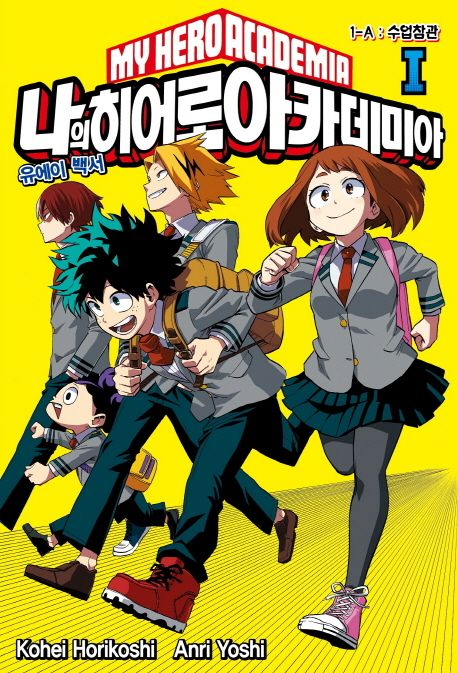

나의 히어로 아카데미아 -소설
僕のヒーローアカデミア
주요 등장인물
발매 현황
인기
소설

원작인 만화에서 묘사되지 않은 원작 에피소드 사이사이의 이야기를 그리고 있다. 원작에선 묘사되지 않은 유에이 학생들의 일상 생활 모습을 알 수 있다. 1권은 스테인 에피소드 이후, 2권은 임간합숙 직전, 3권은 카미노 구 사건 이후부터 히어로 인턴 편 직전, 4권은 문화제 편의 시간대를 다룬다. 5권은 2021년 6월 22일 발행 예정.